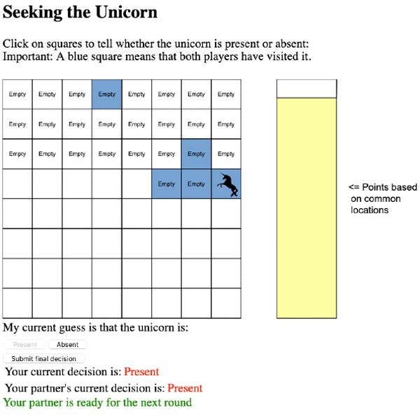
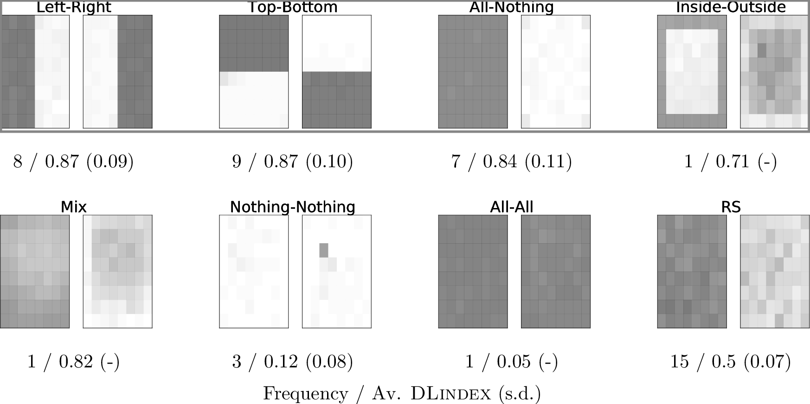
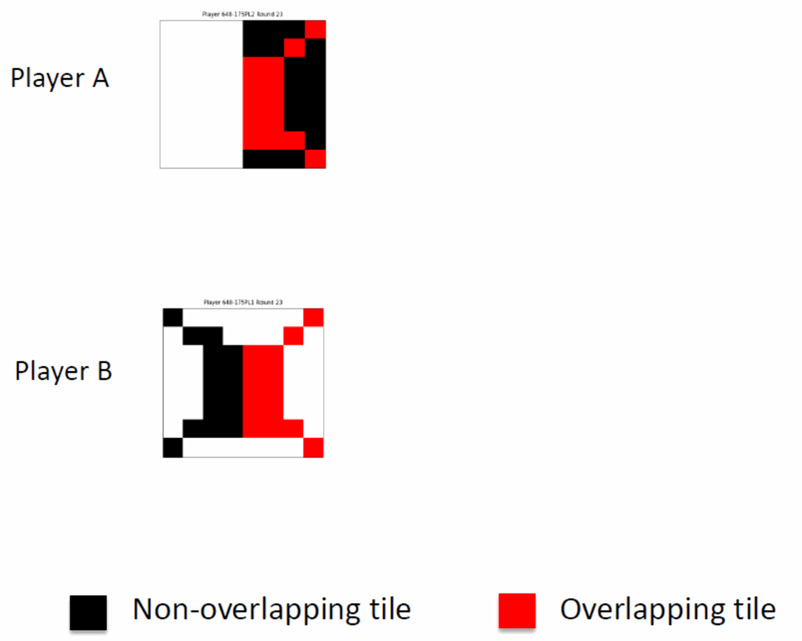
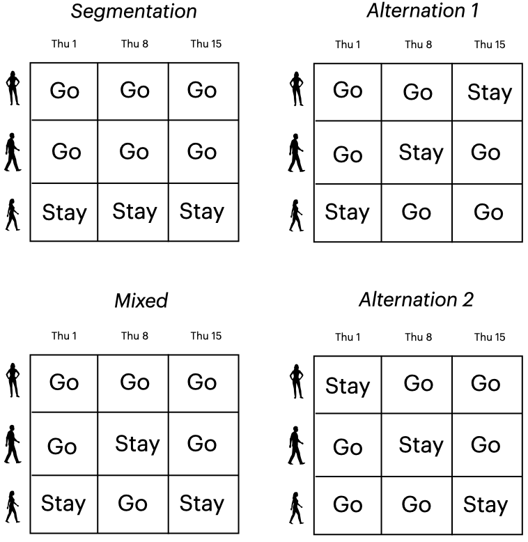
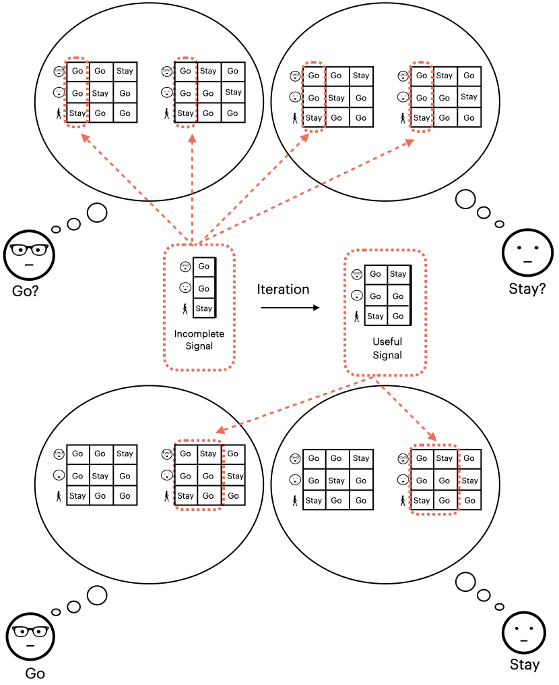
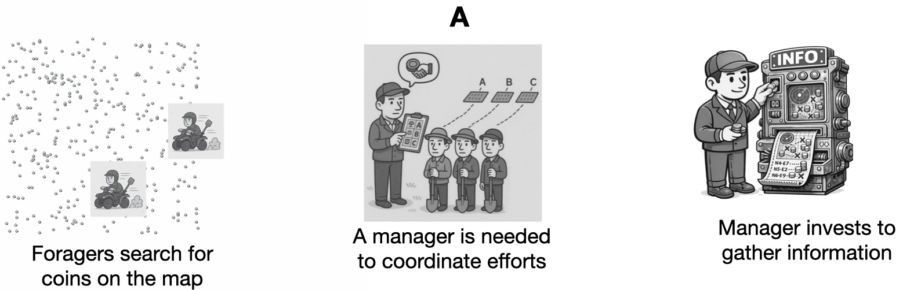
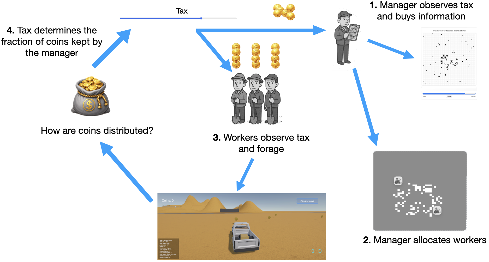
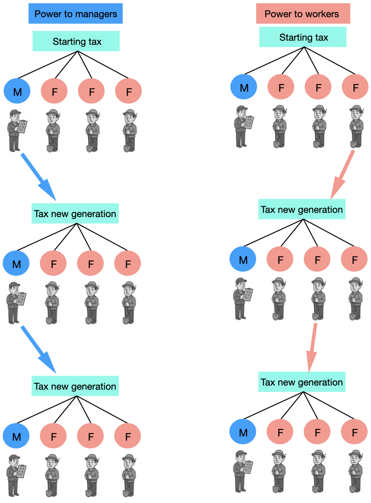
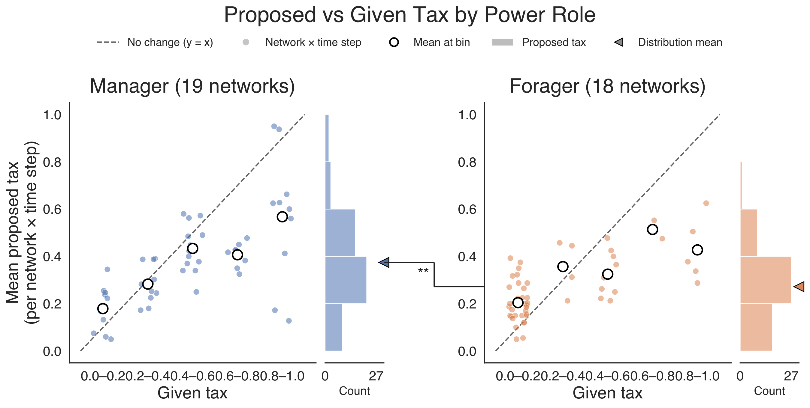

Research interests
My research projects can be summarized in the following topics:
Group cognition and cooperation
We investigate how cognitive, structural, and environmental factors drive coordination, efficiency, and fairness.
Cooperation and focal points
One of our core findings demonstrates that ‘focal points’—psychologically salient solution scenarios—are instrumental in achieving coordination during repeated tasks.
The central idea is this: When faced with a coordination problem, humans mentally simulate a few potential scenarios. They then assess how well their current reality matches these imagined scenarios and adjust their behavior to align with the most accurate prediction (see this paper for a more overarching approach).
To illustrate the point, consider the following task:



A pair of players must find whether there is or not a unicorn hidden beneath one of the tiles in a grid.
Each player privately knows what they find under the tiles. The public knowledge is which tiles both players have searched in common and what the other player has guessed. Overlapping searches penalize the players' score.
Examining the frequency each tile was uncovered, we found that players split the grid using some natural divisions.
These regions drove players' decisions in an interesting way: they worked as behavioral attractors and the complementary regions acted as repellers. A player was more likely to uncover a region the more it resembled a focal region. And the more their inefficient overlap resembled a focal region, the more the player was attracted to the complementary region.
We fit a computational cognitive model incorporating these mechanisms to the data. The model outperformed several alternative accounts and qualitatively reproduced the behavioral patterns observed in the experiment. See details in this paper.
We observed a similar use of focal regions in a different coordination task: the El Farol Bar Problem. In this paradigm, a town of 100 people has a bar that everyone would like to visit every Thursday. If no more than 60 people attend, everyone enjoys the evening. If attendance exceeds 60, the bar becomes overcrowded, and those who went would have preferred to stay home.
The El Farol Bar Problem captures the tension between individual and collective interests. Each person prefers to attend the bar, but when too many do so, everyone’s payoff declines. Moreover, avoiding overcrowding does not guarantee fairness.


Attendance patterns such as the segmented and mixed solutions shown in the left column of the figure achieve efficient use of the bar while producing unequal payoffs across individuals. By contrast, the two alternation patterns in the right column achieve the same level of efficiency while distributing attendance opportunities equally over time.
We found that people maintain a small repertoire of intuitive behavioral patterns, then track which focal pattern best reflects the group's recent history and coordinate their actions based on the predictions of this best-fitting schema. An illustration of this mechanism is shown in the figure.
Our proposed computational cognitive model builds directly upon this pattern-prediction intuition. It also includes two lower-level mechanisms, which reward payoff and attendance. This model fits the experimental data better than other models based on reinforcement learning, bounded rationality, and fictitious play.
Cultural evolution of power
In this project, we explore the preferences of power roles. Imagine a situation in which your interests are not aligned with those of other people. If you had control over the conditions of the interaction, would you act on self-interest or would you favor a more prosocial configuration?




To make these questions concrete, we are developing a large-scale online experiment in which foragers collect resources from the environment.
The size of the harvest is highly dependent on the initial locations of foragers, so we introduce a manager, who invests in information to better coordinate effort and who collects their reward by taxing the foragers' harvest.
Now, do foragers prefer a small tax rate? What rate would managers prefer?
We treat these preferences as inductive biases, which we study using the technique of cultural transmission. One generation of manager and foragers use a given tax rate and, at the end of the interaction, either the manager or the foragers (we take their average) propose a new tax rate, which will be the given tax for a new generation. In turn, this generation will propose a new tax and so on.
We found that participants maintained high effort regardless of the tax rate. Although tax proposals reflected role-specific self-interest, managers and workers converged on moderate rather than extreme tax rates.
Simulations further showed that Reinforcement Learning or Gibbs Sampling with people can improve collective performance while reducing inequality, motivating future experiments with human–AI institutional design.
Institutional context of fairness behaviors
Division of linguistic labor
Logic and Semantics
- A misconception of logic
- Models of language
- DRT and …
- Leveraging…